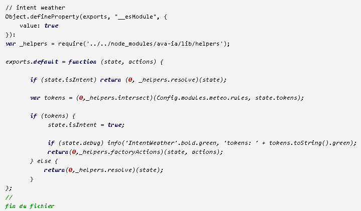

Le Traitement du Langage...
Lorsque vous dictez quelque chose à Avatar, la phrase est traduite automatiquement vers l'Anglais puis une analyse sémantique est effectuée sur les mots ou sur les racines anglaises des mots qui elles, ne varient jamais.Pour réaliser un traitement sémantique de la phrase dictée, Avatar intègre son propre traitement du langage. Par exemple, si vous dites :
- "J'ai besoin d'un rendez-vous avec le dentiste demain à 14 heures à Paris"
- "I need an appointment with the dentist tomorrow at 2pm in Paris"
Avatar analyse la phrase et crée un scénario en relation:
- SUJET
I - ACTION
need - VALUE
1 - OBJECT
appointment - ITEM
the dentist - WHEN
Fri Feb 03 2017 14:00:00 GMT+0200 (ICT) - LOCATION
Paris
Avatar retourne aussi des informations de contexte:
- LANGUAGE = fr
- TYPE =
declarative - SENTIMENT =
0(neutral) - CLASSIFIER =
/travel/transit - PROFILE (Si l'utilisateur a parlé à Avatar précédement, il retourne un historique)
Ce qui en en resulte n'est rien moins qu'un groupe de règles pour le scénario en relation et les informations de contexte:
- Y a t'il une LOCATION? Oui, Paris
- c'est un negative SENTIMENT? non, neutral
- know WHEN? Oui, demain à 2pm +
- Ajouter un rendez-vous au calendrier
${ITEM} à ${LOCATION} le ${DATE}

Un petit schéma pour vous montrez comment Avatar intègre son traitement du langage dans la totalité du processus:

- Une règle est jouée
- Le Client écoute
- Audio enregistré
- Envoi de la phrase texte au Serveur et traduction en Anglais par Google Translate
- Traitement de la phrase traduite en Naturel Language Processing
- Traitement la phrase et déterminer si elle correspond à un plugin: L'intention ou the Intent
- Exécution de l'action et paramètres associés à l'Intention: L'action ou the Action
- Envois vers le plugin associé
- Exécution de l'action du plugin et/ou/avec retour vocal sur le Client
Tout est automatique jusqu'au point 5.
Après ce point, c'est à vous de jouer pour réaliser tout ce que votre imagination peut vous permettre !! :-)
En conclusion, il va vous falloir:
- Déterminer si la phrase à une intention vérifiée
- Exécuter l'action associée à l'intention
- Exécuter le plugin en relation
Développement
Depuis la version 3.0, vous pouvez utiliser le Plugin Studio, accessible depuis le widget du Serveur dans l'interface AVATAR puis "Créer un plugin".En choisissant les paramèters de création, vous pouvez générer le core de votre plugin directement et automatiquement. Le fichier d'intention, le fichier d'action, le fichier de propriétés (incluant au besoin l'objet cron) et le fichier js du plugin correctement formaté.
Ensuite, une fois le plugin généré, vous pouvez ouvrir le fichier js du plugin depuis l'onglet "Fichiers" du Plugin Studio, cliquez sur le fichier pour l'ouvrir dans l'éditeur de texte intégré d'AVATAR et insérer directement des fonctions javascript depusi le menu contextuel (clic droit puis "Insérer...").
Même si vous n'utilisez pas l'éditeur de texte intégré, ceci peut vous donner de bons exemples pour insérer les fonctions que vous voulez.
Néanmoins, je vous conseille vivement de lire les chapitres suivants pour appréhender toutes les possibilités de dévelopement.
L'Intention
L'intention est ce qui permet à Avatar de déterminer si la phrase dictée est associée à un plugin (point 1 du point 6 du chapitre précédent).Toutes les actions dictées vocalement depuis un client ont une Intention. Par contre, on peut très bien ne pas avoir d'Intention si l'action provient d'une requète HTTP qui dans ce cas appelle directement l'action du plugin (puisque rien n'est dicté).
L'Intention est un fichier javascript (js) que vous créez et dans lequel vous définissez ce qui permet de valider l'action.
Nom du fichier d'intention
Un fichier d'intention est créé dans le répertoire du plugin associé.Vous pouvez créer plusieurs fichiers d'intention pour le même plugin. Par exemple, lorsque les actions associées à l'intention sont trop différentes ou encore que pour un type de règles, on préferera chercher par un terme et pour les autres par la syntaxe (voir ci-dessous, les termes et syntaxes).
Pour un seul fichier d'intention, le nom doit obligatoirement commencer par intent suivi d'un point (.) et un nom:
intent.<name>.js
Exemple:
intent.meteo.js => Dans le répertoire c:\Dossier d'install du serveur\plugins\meteo
Pour plusieurs fichiers d'intention, les noms doivent obligatoirement commencer par intents suivi d'un point (.), un nom différent et un suffixe (peut être identique):
intents.<name>.<suffixe>.js
Exemple:
intents.yahoo.forecast.js
intents.msn.forecast.js
Création du fichier d'intention
Important: Depuis la version 3.0 d'AVATAR, le fichier d'intention est automatiquement créé par l'action "Créer un plugin" depuis le "Plugin Studio" du menu d'AVATAR Serveur. Suivant les réponses du template de création, vous pouvez créer au choix un fichier d'intention de type "intersect" ou "syntax" avec votre plugin. Néanmoins, je vous conseille vivement de lire les chapitres suivants pour appréhender ce que sont ces possibilités.Il y a 2 façons de vérifier si la phrase dictée "matche":
- Vérifier si un terme d'une liste est contenu dans la phrase:
- En utilisant la fonction Helpers.intersect()
- Vérifier si la phrase à une syntaxe spécifique:
- En utilisant la fonction Helpers.syntax()
1. La fonction Helpers.intersect()
La fonction intersect() sert à vérifier si la phrase (découpée en termes par NLP) contient un terme d'une liste de termes.D'où vient la liste de termes ?
La liste de termes est toujours définie dans un tableau, exemple ["terme"] ou ["terme1","terme2","terme3","terme4",....]ILe tableau n'a pas de nom spécifique mais par convention, on utilisera "rules".
Tous les termes doivent être définis en minuscules et en anglais!
Ils peuvent provenir:
- Du fichier de propriétés (.prop) du plugin dans le répertoire du plugin
- Par exemples:
- "rules" : ["weather"],
- "rules" : ["weather", "umbrella", "rain", "forecast", "snow"],
- Rappel: Tous les fichiers de propriétés des plugins (.prop) sont accessibles depuis l'objet global Config.modules.<Plugin>
- Directement inclus dans le fichier js de l'intention
- Par exemple: var rules = ["weather", "umbrella", "rain", "forecast", "snow"];
- Depuis n'importe quelle autre source...
Pour une explication simple, nous allons reprendre l'exemple de l'action "météo":
Je veux rechercher si un terme est dans la phrase dictée, j'utiliserai donc la fonction intersect().
Les termes qui m'intéressent sont définis dans le fichier de propriétés du plugin "météo" sous la forme d'un tableau que j'ai nommé "rules":
"rules" : ["weather", "umbrella", "rain", "forecast", "snow"],
Rappel:
- Les termes sont en anglais (puisque la phrase est
traduite). Mais en français, je cherche donc dans toutes les phrases
que je
pourrais prononcer les termes suivants: "météo", "parapluie",
"pluie","prévision","neige".
Pour l'exemple, voici le fichier d'intention c:\Dossier d'install du serveur\ia\intents\intent.weather.js du plugin météo avec les explications en dessous:

Explications:
- En haut du fichier, les déclarations qui doivent être toujours présentes et qui servent à importer la fonction helpers.intersect
Object.defineProperty(exports, "__esModule", {
value: true
}):
var _helpers = require('../../node_modules/ava-ia/lib/helpers');
-
if (state.isIntent) return (0, _helpers.resolve)(state);
-
var tokens = (0,_helpers.intersect)(Config.modules.meteo.rules, state.tokens);
-
if (tokens) { // => alors
- Si le débug est actif, un message est affiché (non obligatoire)
- L'action associée à l'intent est exécutée.
- Sinon =>
Voilà, pas trop compliqué non ?
Et souvenez-vous que c'est très rapide de faire un copié/collé d'un fichier existant et de modifier les quelques petites différences pour l'effectuer pour une intention d'un autre plugin avec des termes différents. Ici, finalement:
- Le Config.modules.<plugin>.rules
- Le texte du message info('IntentWeather'...) dans la console (et encore... on n'est pas obligé d'avoir un message dans la console...).
2. La fonction Helpers.syntax()
La fonction syntax() sert à vérifier si une phrase dictée a une syntaxe spécifique.D'où viennent les règles de syntaxe?
Comme pour la fonction Intersect(), les syntaxes sont définies dans des tableaux de règles.Ils peuvent provenir:
- Du fichier de propriétés (.prop) du plugin dans le répertoire du plugin
- Par exemple: "lightOn" : ["switch on * light","turn on * light"],
- Rappel: Tous les fichiers de propriétés des plugins (.prop) sont accessibles depuis l'objet global Config.modules.<Plugin>
- Directement inclus dans le fichier js de l'intention
- Par exemple: var lightOn = ["switch on * light","turn on * light"];
- Depuis n'importe quelle autre source...
Il n'y a pas de nom spécifiques à ces tableaux de règles. Là, c'est vous qui choisissez en fonction de ce que vous voulez réaliser et la complexité de l'action associée. Par exemple, une règle peut renvoyer (par son nom) vers un autre tableau d'objet du fichier de propriétés de votre plugin où sont définis des propriétés nécessaires à l'exécution de l'action.
Tous les règles de syntaxe doivent être définis en minuscules et en anglais !
Ci-dessous la liste des correspondances que vous pouvez mettre dans les tableaux de règles:
| Correspondance | Description |
| Basic matching | La phrase doit
correspondre exactement à la règle "rules" : { "regle" : [ "remove program"] }, "rules" : { "regle" : [ "remove program","delete program"] }, |
| POS matching | Vous pouvez utiliser la
définition
du
terme, tous les mots ayant cette définition seront acceptés. "rules" : { "regle" : [ "remove [Noun]"] }, Quelques définitions acceptées: [Possessive], [Noun], [Infinitive], [Preposition], [Demonym], [Adverb], [Copula] Il y a un grand nombre de définitions de termes. Un bon moyen de valider les termes présents dans la phrase est d'utilser la fonction _nlp_compromise2.default.text() var terms = _nlp_compromise2.default.text(state.sentence).sentences[0].terms;Vous pouvez utiliser aussi l'objet tags de l'objet state state.tagsExemple d'application, le plugin translate (voir le fichier action.translator.js) |
| Alias matching | Recherche les mots qui
"signifient" la même chose. Synonymes, formes et
conjugaisons différentes sont pris en charge. "rules" : { "regle" : [ "~remove~ program"] }, |
| Wildcard matching | Le caractère .
signifie "n'importe quel terme" "rules" : { "regle" : [ "~remove~ . program"] }, Le caractère * signifie "tous les termes jusqu'à". Peut être 0. "rules" : { "regle" : [ "~remove~ * program"] }, |
| Optional matching | Le caractère ? à la
fin d'un mot signifie qu'il n'est pas obligatoire. "rules" : { "regle" : [ "~remove~ a? program"] }, "rules" : { "regle" : [ "~remove~ [Preposition]? program"] }, |
| List of options | (mot1|mot2)
entre parenthèses signifie ..."ou"... pour les mots possibles. "rules" : { "regle" : [ "~remove~ * (program|programs|scenario)"] }, "rules" : { "regle" : [ "(~remove~|~delete~) * (program|programs|scenario)"] }, |
| Location flags | ^
signifie que le mot doit être "au début de la phrase". "rules" : { "regle" : [ "^remove program"] }, $ signifie que le mot doit être "à la fin de la phrase". "rules" : { "regle" : [ "remove * program$"] }, |
Reprennons l'exemple de l'action "météo", ici nous allons vérifier la syntaxe de la phrase, j'utiliserai donc la fonction intersect().
Les phrases qui m'intéressent sont définies dans le fichier de propriétés meteo.prop du plugin "météo" sont la forme d'un tableau que j'ai nommé "rules":
"rules" : ["~give~ * (weather|forecast)"],
Suivant les règles de correspondances juste au dessus, j'accepte donc les phrases qui correspondent à la syntaxe suivante:
- Tous les synonymes, formes et conjugaisons de "give"
- N'importe quel mot ensuite
- Les termes weather ou forecast
L'Action
L'action est ce qui permet d'exécuter quelque chose associée à une intention. Dit autrement, si il y a un fichier d'intention, il y a forcément au minimum un fichier d'action.L'action est un fichier javascript (js) que vous créez et dans lequel vous mettez ce qui permet de la définir:
- Exécution de fonctions
- Récupération de propriétés
- Contrôles et/ou tests supplémentaires
- Envoi à Avatar avec un nom de plugin à exécuter, l'action dans le plugin et des propriétés pour l'action
Nom du fichier d'action
Un fichier d'action est créé dans le répertoire du plugin associé.Pour un seul fichier d'action, les noms doivent obligatoirement commencer par action suivi d'un point (.) et un nom:
action.<name>.js
Exemple:
action.weather.js => Dans le répertoire c:\Dossier d'install du serveur\plugins\meteo
Vous pouvez créer plusieurs fichiers d'action pour la même intention. Par exemple, lorsque plusieurs actions différentes peuvent être associés à une intention.
Dans ce cas, c'est une course et le premier qui gagne cette course et retourne les informations demandées gagne le droit d'exécuter le plugin !
Pour plusieurs fichiers d'action et un fichier d'intention, les noms doivent obligatoirement commencer par action suivi d'un point (.) et un nom différent:
action.<name>.js
Exemple:
action.forecast.yahoo.js => Pour la recherche avec l'API Yahoo
action.forecast.msn.js => Pour la recherche sur le site de Msn
Vous pouvez retrouver cet exemple dans Avatar puisque c'est la définition exacte du plugin météo pour laquelle une course est effectuée entre Msn et Yahoo et le premier qui retourne l'information gagne (pour mémo, depuis quelques mois, Yahoo a stoppé l'utilisation gratuite de son API. Néanmoins, vous pouvez quand même vous référez au plugin pour avoir un exemple).
Pour plusieurs fichiers d'action et plusieurs fichiers d'intention, les noms doivent obligatoirement commencer par actions suivi d'un point (.), le <name de l'intention associée> et un suffixe différent:
action.<le name de l'intention associée>.<suffixe>.js
Par exemple, supposons que nous ayons 2 fichiers d'intention pour la météo:
intents.meteozoulou.forecast.js => pour des règles vocales spéciales "météo zoulou".
intents.weather.forecast.js => pour rechercher sur des sites plus classique avec 2 fichiers d'action sur l'API Yahoo et le site de Msn
Nous aurons alors:
actions.meteozoulou.classique.js
actions.weather.msn.js
actions.weather.yahoo.js
Supposons un 2ème exemple ou nous avons 2 fichiers d'action pour "meteozoulou" à la place d'un:
Nous aurons alors:
actions.meteozoulou.classique.js
actions.meteozoulou.special.js
actions.weather.msn.js
actions.weather.yahoo.js
En conclusion: Aucune configuration n'est nécessaire pour réaliser l'association fichier d'intention-fichier d'action dans Avatar. Elle est automatique par les noms des fichiers.
Dernier rappel:
- Le premier fichier d'action associé à une intention qui gagne la course et retourne les informations demandées gagne le droit d'exécuter le plugin !
- Cette course n'est que pour les fichiers d'actions d'une seule intention. Si il y a 2 fichiers d'intention, c'est parce qu'il y a des règles vocales différentes qui dirigeront vers des actions différentes !
Création du fichier d'action
Important: Depuis la version 3.0 d'AVATAR, le fichier d'action est automatiquement créé par l'action "Créer un plugin" depuis le "Plugin Studio" du menu d'AVATAR Serveur. Suivant les réponses du template de création, vous pouvez créer un fichier d'action plus ou moins complexe avec votre plugin. Néanmoins, je vous conseille vivement de lire les chapitres suivants pour appréhender ce que sont ces possibilités.Il ya plusieurs fonctions de traitement du langage que l'on peut utiliser pour récupérer des informations sur les termes, par exemple pour savoir et/ou retrouver dans ce qu'on a dit: un lieu, une heure, l'objet de l'action.... (voir le chapitre Un peu d'histoire sur le traitement du langage)
Dans ce chapitre, nous allons appréhender le mécanisme de création du fichier d'action au travers d'exemples simples et fonctionnels.
Pour de plus amples renseignements, utilisez les fichiers d'actions disponibles dans Avatar comme support d'apprentissage.
1. Creation basique
Un fichier d'action basique est le plus simple fichier d'action qu'il est possible de créer. Il définie uniquement le plugin à exécuter.Prenons l'exemple de demande de l'heure.
- Vous: SARAH ?
- Avatar: oui ?
- Vous: quelle heure est-il ?
- Avatar: il est 20 heures 50
Le fichier d'action action.hour.js se présentera alors sous cette forme:
Explications:
- En haut du fichier, les déclarations qui doivent être
toujours présentes et qui servent à exporter le fichier
d'action
'use strict';
Object.defineProperty(exports,"__esModule", {
value: true
});
-
return new Promise(function (resolve, reject) {
-
setTimeout(function(){
-
state.action = {
module: 'hour'
};
- resolve(state);
Voilà, pas trop compliqué non ? :-)
Et souvenez-vous que c'est très rapide de faire un copié/collé d'un fichier existant et de modifier les quelques petites différences d'un autre plugin, Soit:
- Le nom du plugin à exécuter dans state.action.module
- Le texte du message info('ActionHour'...) dans la console (et encore... on n'est pas obligé d'avoir un message dans la console...).
2. Création avec un tableau de syntaxes multiples
Prenons le même exemple avec le plugin hour mais en y ajoutant 2 actions:- Donner l'heure
- Donner la date
Evidement nous avons aussi 2 règles définies dans le fichier hour.prop sous forme d'un tableau de syntaxes:
"rules" : {
"hour" : ["~give~ * hour"],
"date" : ["~give~ * date"]
}
Il faut donc boucler pour trouver quelle action est à réaliser, ce qui peut se faire très simplement, (en prenant soins d'ajouter la variable globale _helpers)
Il suffit ensuite d'ajouter le nom du tableau de syntaxe trouvé comme un nouveau paramètre command qui deviendra l'action à exécuter et récupérable dans le plugin sous la fome data.action.command
Les possibilités sont très nombreuses et liées aux plugins que vous voulez créer. Elles peuvent être simples ou complexes.
Vous avez dans les fichiers action des plugins existants beaucoup d'exemples que vous pouvez utiliser pour vos plugins, vous pouvez aussi faires tous les tests ou fonctions que vous jugez bons. Il n'y a qu'une seule règle: récupérer et passer les informations dont votre plugin a besoin dans l'objet state.action.
3. Un peu plus loin dans la création...
Avatar permet, si vous le voulez, de ne pas exécuter de plugin après le fichier d'action de l'intention... eh oui.... avoir un plugin n'est pas une obligation.Ceci est réservé à des choses simples, comme faire dire à Avatar l'heure qu'il est, par exemple. On voit bien là qu'avoir un plugin pour juste vocaliser une phrase est un luxe inutile. Il existe donc un certain nombre de clés que vous pouvez passer dans l'objet state.action pour effectuer certaines actions, y compris juste vocaliser un tts sans avoir de plugin à exécuter.
Ci-dessous toutes les clés de l'objet state.action que vous pouvez passer dans les plugins ou directement pour vocaliser une phrase par exemple (sans passer par un plugin)
| objet state.action | Type | Obligatoire | Description |
| state.action.module | String | Non | Nom du module à exécuter. Si défini alors il doit exister comme plugin Avatar. |
| state.action.tts | Boolean | Non | true: Une
phrase à vocaliser par Avatar. false Non obligatoire, par défaut.. Peut être associé avec state.action.module, la phrase vocalisée est synchrone, le plugin sera exécuté seulement après la fin de la phrase. |
| state.action.value | String | Oui si state.action.tts = true | La phrase à prononcer par Avatar si state.action.tts=true |
| state.action.no_end | Boolean | Non | Lié à state.action.tts Cette propriété est lié à la possibilité de couper le son des périphériques automatiquement avant chaque phrase dictée/prononcée par l'utilisateur lors du déclenchement de l'écoute par le mot-clé (Ceci est fait pour avoir un dialogue clair et audible). Par défaut, à la fin de la phrase ou du dialogue, le son des périphériques est remis automatiquement. Mais quelques fois, il est bon de contrôler la remise du son, par exemple:
|
| state.action.norule | Boolean | Non utilisable | Cette propriété n'est pas
utilisable dans les actions. Donnée à titre indicatif. Présente uniquement lorsque aucune intention n'a été trouvée. Le fichier d'action action.end.js est exécuté avec:
|
| state.action.<Votre clé> | - | - | Vous pouvez ajouter autant de propriétés que le plugin à besoin dans l'objet state.action |
4. L'objet state
L'objet state est la chaine de tout le processus de l'intention et d'action.Dans l'Action, l'objet state.action est ajouté avec les paramètres puis state est envoyé au plugin qui le recoit en paramètre data.
Mais en plus des paramètres ajoutés dans l'objet state.action, il y a aussi toutes les caractéristiques de la règle dictée à Avatar
- La phrase dans le langage courant
- La phrase traduite en Anglais
- Le tableau des termes de la phrase découpée par NLP
- Le client courant
- et plein d'autres choses...
| Objet | Type | Description |
| state.rawSentence | string | La phrase dans le langage courant |
| state.sentence | string | La phrase traduite en Anglais |
| state.language | string | Code ISO (cca2) du langage courant |
| state.type | string | Retourne le type de la phrase, soit: declarative,
interrogative, exclamative |
| state.topics | array | Tableau des termes les plus importants dans la phrase |
| state.tokens | array | Tableau des termes de la phrase |
| state.tags | array | Tableau des définitions des termes de la phrase |
| state.relations | object | Contient les relations
trouvées dans la phrase: state.relations:
Utilisable avec la fonction helpers.relation() dans un fichier d'action. Pour un exemple d'utilisation, voir le fichier d'action action.forecast.msn.js Voir aussi le chapitre un peu plus ? |
| state.sentiment | Integer | Contient l'humeur de la phrase: -5 la plus négative, 0 neutre et +5 la plus positive |
| state.client | string | Le nom du client qui a déclenché la fonction |
| state.action | objet | L'objet ajouté dans l'action. |
5. L'action End
Lorsqu'une phrase n'a pas pu être trouvée dans toute les intentions, l'action actionEnd est exécutée en dernier et affiche dans la console du serveur des informations.Ces infomations vous permettent de voir les tokens et tags (voir l'objet state) découpés par NLP et ainsi de modifier dans des tableaux de règles que vous avez définies ce qui n'est pas correct.

Réordonner l'ordre des plugins pour NLP
La prise en compte des plugins est séquentielle lors de l'initialisation du Traitement Naturel du Langage.Par conséquent, la recherche d'une règle se fait séquentiellement dans tous les plugins de votre bibliothèque, les uns après les autres.
Le temps de recherche d'une règle et le traitement de l'action associée peut devenir très long (quelques secondes) suivant le nombre de plugins et de règles que vous avez.
Pour accélérer les temps de réponses pour les plugins les plus utilisés, vous pouvez leurs donner un ordre de chargement pour que leurs règles soient trouvées en premier.Retrouvez cette possibilité dans l'interface AVATAR et son menu contextuel "Plugins" -> "Ordonner les plugins".
Remarque: Ceci définie automatiquement la propriété "nlpPosition" dans les fichiers de propriétés (voir ci-dessous).
Quelques fois, il peut arriver aussi qu'il y ait des conflits entre les règles de plusieurs plugins, par exemple:
Supposons les 2 plugins suivants:
- Time
- Translate
Traduis
en anglais quelle heure est-il
Et demander l'heure:Quelle heure est-il
Le problème est que pour demander l'heure, nous avons le même terme dans le phrase: heure et que comme la prise en compte des plugins est séquentielle, nous risquons de ne jamais nous faire comprendre par Avatar lorsque nous demandons une traduction si le plugin Time est pris en compte avant le plugin Translate. Pourquoi ? Simplement parce que il y a moins de terme dans la règle pour demander l'heure que dans la règle de traduction pour valider l'intention.
Par contre, si le plugin Translate est toujours avant le plugin Time, NLP devra valider plus de mots pour en valider l'intention, soit: Traduis en anglais... heure... et s'il ne trouve pas, alors il passera au plugin suivant Time.
Par conséquent, lorsqu'il y a une possibilité de conflit, il est nécessaire de définir un ordre de prise en compte des plugins dans NLP et définir toujours les règles les plus longues devant les règles les plus courtes.
Lorsqu'il n'y a pas de possibilité de conflit, il n'est pas nécessaire d'ajouter un ordre. Ce n'est pas obligatoire.
Pour définir un ordre de prise en compte dans NLP pour un seul fichier d'intention dans le plugin:
- Ouvrez le fichier de propriétés du plugin
- Ajoutez une propriété "nlpPosition"en haut et sous l'objet <nom du module> avec un entier qui représente sa position.
"translate" : {
"description": "traducteur automatique du francais vers un max de langues",
"exemple": "traduit en polonais bonjour je suis un traducteur que puis-je pour vous?",
"nlpPosition" : 1,
"rules" : {
"translate" : ["(~translate~|translated) * [Preposition]? [Demonym]"]
},
"description": "traducteur automatique du francais vers un max de langues",
"exemple": "traduit en polonais bonjour je suis un traducteur que puis-je pour vous?",
"nlpPosition" : 1,
"rules" : {
"translate" : ["(~translate~|translated) * [Preposition]? [Demonym]"]
},
Et pour le plugin Time, nous voulons qu'il soit en 2ème position:
"time"
: {
"description": "Donne l'heure pour tous les pays du monde",
"exemple": "Quelle heure est-il à Los Angles, il est quelle heure, donne-moi l'heure à Bangkok",
"nlpPosition" : 2
}
"description": "Donne l'heure pour tous les pays du monde",
"exemple": "Quelle heure est-il à Los Angles, il est quelle heure, donne-moi l'heure à Bangkok",
"nlpPosition" : 2
}
Pour définir un ordre de prise en compte dans NLP avec plusieurs fichiers d'intention dans le plugin:
- Ouvrez le fichier de propriétés du plugin
- Ajoutez une propriété "nlpPosition"en haut et sous l'objet <nom du module> avec un objet qui représente les noms des intentions et leurs positions.
"scenariz" : {
"description": "Gestion de scenarios",
"nlpPosition" : {
"manage" : 3,
"rules" : 4
},
"description": "Gestion de scenarios",
"nlpPosition" : {
"manage" : 3,
"rules" : 4
},
Les plugins
Un petit rappel:Si le plugin est lié à une règle vocale, il est nécessaire d'avoir créé avant:
Si vous n'avez pas lu les chapitres associés, je vous propose de le faire maintenant...
Un plugin est créé dans le répertoire c:\Dossier d'install du serveur\plugins\ du serveur Avatar et ne doit pas avoir d'espace dans son nom.
c:\Avatar\server\plugins\monplugin est correct mais c:\Avatar\server\plugins\mon plugin n'est pas correct.
Il est constitué de 2 fichiers au minimum:
- Un fichier javascript (.js)
- Un fichier de propriétés (.prop)
Le fichier javascript du plugin
Doit être nommé avec un nom identique au nom du répertoire du plugin.Par exemple, dans un répertoire c:\Avatar\server\plugins\monplugin le fichier javascript sera c:\Avatar\server\plugins\monplugin\monplugin.js
Important: Depuis la version 3.0 d'AVATAR, le fichier js du plugin est automatiquement créé par l'action "Créer un plugin" depuis le "Plugin Studio" du menu d'AVATAR Serveur. Suivant les réponses du template de création, vous pouvez créer un fichier js plus ou moins complexe pour votre plugin. Néanmoins, cette création automatique ne permet pas toutes les possibilités. Les fonctions qui peuvent être automatiquement créées par l'action "Créer un plugin" sont action(), init() et cron(), les autres fonctions possibles doivent être ajoutées à la main.
Ci-dessous les fonctions (obligatoires ou non) exportées et gérées par le core d'Avatar pouvant être ajoutées dans un plugin:
action(data, callback)
La seule fonction obligatoire du plugin.exports.action = function (data, callback) {
info ('Mon action: ', data.action.command, 'from:', data.client);
callback();
}
Paramètre data:
| Paramètre | Description |
| data.action | Contient tous les
paramètres définis pour le plugin:
|
| data.client | Contient le nom du client qui exécute le plugin |
Paramètre callback
Ce paramètre "chaine" les appels de plugins dans Avatar. Il doit toujours être présent et appelé une fois.init()
Non obligatoire, si cette fonction existe, elle est exécutée au démarrage d'Avatar Serveur et avant la fonction action()On s'en servira donc pour initialiser au démarrage certains paramètres, de charger des modules nodejs, d'ajouter des modules d'écoutes (fonction listen), définir des variables globales, etc...
var debug;
exports.init = function () {
// Do STUFF...
// Un exemple...
debug = Config.modules.monplugin.debug;
}
cron(data)
Non obligatoire,si cette fonction existe, elle est exécutée par un cron à horaire fixe qui est paramétré dans le fichier de propriétés du plugin (voir ci-dessous).exports.cron = function (data) {
info("c'est l'heure d'exécuter une tâche...");
}
Paramètre data
Objet contenant les informations du cron définies dans le fichier de propriétés du pluginmute(clientFrom, clientTo)
Non obligatoire, si cette fonction existe, elle est exécutée juste avant qu'AVATAR passe en mode écoute.Parfaite pour couper le son d'un périphérique lié au plugin (son, télévision...) afin de faire le silence et permettre une meilleure compréhension lors d'un dialogue.
exports.mute = function (clientFrom, clientTo) {
if (clientFrom && clientTo) {
// exécute seulement si ce n'est pas un client Android et uniquement pour le client 'Chambre'
if (Avatar.isMobile(clientFrom) || clientTo.toLowerCase() != 'chambre') {
return;
}
// Exécute l'action, ici une fonction du plugin qui coupe le son du périphérique
send_key('mute');
}
}
Paramètre clientFrom
Le client qui a passé la règle.Paramètre clientTo
Le client courant (clientFrom ou défini par la variable Avatar.currentRoom).
unmute(clientFrom, clientTo)
Non obligatoire, si cette fonction existe, elle est exécutée juste après qu'AVATAR repasse en mode silence.Parfaite pour remettre le son d'un périphérique lié au plugin (son, télévision...) afin de restitué le son si il a été coupé avec la fonction mute()
exports.unmute = function (clientFrom, clientTo) {
if (clientFrom && clientTo) {
// exécute seulement si ce n'est pas un client Android et uniquement pour le client 'Chambre'
if (Avatar.isMobile(clientFrom) || clientTo.toLowerCase() != 'chambre') {
return;
}
// Exécute l'action, ici une fonction du plugin qui remet le son du périphérique
send_key('mute');
}
}
Paramètre clientFrom
Le client qui a passé la règle.Paramètre clientTo
Le client courant (clientFrom ou défini par la variable Avatar.currentRoom)addPluginElements (CY)
Non obligatoire, si cette fonction existe, elle est exécutée pendant l'affichage de l'interface d'AVATAR Serveur.Utilisé pour ajouter dans l'interface des éléments nodes graphiques et/ou d'une interface HTML liés au plugin.
Note:
Vous disposez d'un module 'cyto-avatar' permettant une gestion simplifiée d'ajout, de gestion et de sauvegarde de nodes.
Vous pouvez récupérer ce module 'cyto-avatar' dans le plugin d'exemple 'cyto-demo' depuis la bibliothèque de plugins. Toutes les fonctions possibles sont clairement expliquées dans le module.
Utilisez aussi comme exemples des plugins tels que "Avatar-Plugin-eeDomus", "Avatar-Plugin-scenariz", "Avatar-Plugin-SonosPlayer" ICI !
Plus d'infos sur les nodes cytoscape sur http://js.cytoscape.org/
const {Graph} = require('cyto-avatar');
// global Graph
let cyto;
exports.addPluginElements = function(CY) {
// init variable globale module Graph
cyto = new Graph (CY, __dirname);
// Chargement des éléments sauvegardés
cyto.loadAllGraphElements()
.then(elems => {
if (!elems || elems.length == 0) {
// Aucun node sauvegardé, création...
addGraph(cyto)
.then(elem => cyto.onClick(elem, (evt) => {
// DO STUFF ON LEFT CLICK
}))
.catch(err => {
console.log('err:', err || 'erreur dans la création de l\'élément Sonos');
})
} else {
// 1 éléement node présent sauvegardé
cyto.onClick(elems[0], (evt) => {
// DO STUFF ON LEFT CLICK
showAddTitle();
});
}
})
}
Paramètre CY
Le graph de l'interface AVATARonAvatarClose (callback)
Non obligatoire, si cette fonction existe, elle est exécutée lors de la fermeture d'AVATAR Serveur.Utilisé pour sauvegarder des informations liés au plugin avant l'arrêt d'AVATAR comme par exemple la sauvegarde de node(s) lié au plugin et créés par la fonction addPluginElements().
const {Graph} = require('cyto-avatar');
// global Graph, init dans la fonction addPluginElements()
let cyto;
exports.onAvatarClose = function(callback){
// Pour exemple: Sauvegarde seulement les éléments de classe 'cyto' (ici, l'élément 'cyto')
cyto.saveAllGraphElements("cyto")
.then(() => {
// Obligatoire, chaine onAvatarClose pour tous les plugins
callback();
})
.catch(err => {
console.log('Error saving Elements', err)
// Obligatoire, chaine onAvatarClose pour tous les plugins
callback();
})
}
Paramètre callback
Ce paramètre "chaine" les appels de cette fonction pour tous les plugins dans Avatar. Il doit toujours être présent et appelé une fois (même en cas d'erreur, voir l'exemple).subclassSpeak ()
Non obligatoire, si cette fonction existe, elle est exécutée au chargement d'AVATAR Serveur.Utilisé pour surclasser la fonction speak() d'AVATAR pour utiliser un autre système d'enceintes comme par exemple le système de son Sonos. Vos enceintes doivent pouvoir être gérées en WIFI ou par UPNP ou encore avoir une API vous facilitant leurs accès.
Note: La gestion d'un autre système de son n'est pas aisée. Vous devez avoir un bon niveau de développement. Si vous voulez vous essayer, vous avez un très bon exemple dans le plugin SonosPlayer pour lequel la gestion de la fonction speak() est surclassée pour être envoyée sur des enceintes Sonos. Vous pouvez retrouver dans ce plugin tout ce qui doit être fait afin d'avoir un système viable.
.
exports.subclassSpeak = function() {
// sauvegarde la fonction speak() d'AVATAR
let defaultSpeak = Avatar.speak;
// Nouvelle fonction speak()
Avatar.speak = function() {
// Récupération et traitement des paramètres du speak envoyé par AVATAR
let tts = arguments[0] !== 'string' && arguments.length < 2 ? null : arguments[0];
let client = arguments.length >= 2 && typeof arguments[1] !== 'string' ? null : arguments[1];
let callback = arguments.length >= 3 && typeof arguments[2] !== 'function' ? null : arguments[2];
let end;
if (callback)
end = arguments.length == 4 && typeof arguments[3] === 'boolean' ? arguments[3] : false;
else
end = arguments.length == 3 && typeof arguments[2] === 'boolean' ? arguments[2] : false;
if (!client)
return warn('speak: Paramètre client manquant');
if (!tts)
return warn('speak: Paramètre tts manquant');
if (Avatar.isMobile(client)) {
if (!Avatar.Socket.isServerSpeak(client)) {
return defaultSpeak(tts,client,callback);
} else {
client = Avatar.currentRoom ? Avatar.currentRoom : Config.default.client;
}
}
// Si un test n'est pas bon, alors exécution du speak normal d'AVATAR
if (!Avatar.Socket.isServerSpeak(client))
return defaultSpeak(tts,client,callback);
// Sinon, exécution du nouveau speak....
// DO STUFF
}
}
subclassPlay ()
Non obligatoire, si cette fonction existe, elle est exécutée au chargement d'AVATAR Serveur.Utilisé pour surclasser la fonction play() d'AVATAR pour utiliser un autre système d'enceintes comme par exemple le système de son Sonos. Vos enceintes doivent pouvoir être gérées en WIFI ou par UPNP ou encore avoir une API vous facilitant leurs accès.
Note: La gestion d'un autre système de son n'est pas aisée. Vous devez avoir un bon niveau de développement. Si vous voulez vous essayer, vous avez un très bon exemple dans le plugin SonosPlayer (ICI !) pour lequel la gestion de la fonction play() est surclassée pour être envoyée sur des enceintes Sonos. Vous pouvez retrouver dans ce plugin tout ce qui doit être fait afin d'avoir un système viable.
.
exports.subclassPlay = function() {
// sauvegarde la fonction play() d'AVATAR
let defaultplay = Avatar.play;
Avatar.play = function() {
let playfile = arguments[0] !== 'string' && arguments.length < 2 ? null : arguments[0];
let client = arguments.length >= 2 && typeof arguments[1] !== 'string' ? null : arguments[1];
let callback = arguments.length >= 3 && typeof arguments[2] !== 'function' ? null : arguments[2];
let end;
if (callback)
end = arguments.length == 4 && typeof arguments[3] === 'boolean' ? arguments[3] : false;
else
end = arguments.length == 3 && typeof arguments[2] === 'boolean' ? arguments[2] : false;
if (!client)
return warn('Sonos Play: Paramètre client manquant');
if (!playfile)
return warn('Sonos Play: Paramètre file manquant');
if (Avatar.isMobile(client)) {
if (!Avatar.Socket.isServerSpeak(client)) {
return defaultSpeak(tts,client,callback);
} else {
client = Avatar.currentRoom ? Avatar.currentRoom : Config.default.client;
}
}
let serverSpeak = _.find(Config.modules.SonosPlayer.mapped_client_speak, function(num){
return client == num;
});
let logClient = client;
let mapped = _.find(Config.default.mapping, function(num){
return client == num.split(',')[0];
});
if (mapped && !serverSpeak) {
client = mapped.split(',')[1];
}
// Si un test n'est pas bon, alors exécution du speak normal d'AVATAR
if (!Avatar.Socket.isServerSpeak(client) && !serverSpeak)
return defaultplay(playfile,client,callback);
// Sinon, exécution du nouveau speak....
// DO STUFF
}
}
getPluginPath ()
Obligatoire si la fonction play() est surclassée. Si cette fonction existe, elle est exécutée au chargement d'AVATAR Serveur.Retourne à AVATAR le path du plugin si la fonction Play est surclassé afin de créer un répertoire de création de fichiers sons dans le path+'/tts' du plugin.
exports.getPluginPath = function() {
// Retourne le path du plugin
return path.resolve(__dirname);
}
timeoutCallbackEnd (clientFrom, clientTo)
Non obligatoire. Si cette fonction existe, elle est exécutée au chargement d'AVATAR Serveur.Uniquement si voulez qu"un Avatar.speak.end() dans le plugin ait un callback et appliquer un timeout avant d'exécuter ce callback (voir plus bas la fonction end).
exports.timeoutCallbackEnd = function(clientFrom, clientTo) {
// Défini un timeout au callback de la fonction end() pour temporiser le callback
let timeout = Config.modules.SonosPlayer.speech.add_timeout_callback_end * 1000;
info('Sonos timeout:', timeout.toString(), "ms");
return timeout;
}
Paramètre clientFrom
Le client qui a passé la règle.Paramètre clientTo
Le client courant (clientFrom ou défini par la variable Avatar.currentRoom)unresize ()
Non obligatoire. Si cette fonction existe, elle est exécutée au chargement d'AVATAR Serveur.Uniquement si voulez que les nodes définis dans le plugin ne soient pas redimensionnés avec la fenêtre principale d'Avatar lorsque celle-ci est modifiée.
exports.unresize = function(callback) {
// Ignore les nodes avec la classe 'eeDomusWidget'
callback (['eeDomusWidget']);
}
exports.unresize = function(callback) {
// Ignore tous les nodes
callback (['ALL']);
}
exports.unresize = function(callback) {
// Ignore les nodes avec les classes 'eeDomusWidget' et 'eeDomusNode'
callback (['eeDomusWidget', 'eeDomusNode']);
}
Paramètre callback
Un tableau avec les noms de classes des nodes à ignorer ou "ALL" pour tous les nodes d'Avatar, y compris les nodes serveur et clients.beforeNodeMenu ()
Obligatoire si on défini un node avec un menu.Si cette fonction existe, elle est exécutée au chargement d'AVATAR Serveur et avant l'affichage des menus contextuels des nodes dans l'interface Avatar.
En général, lorsque un menu contextuel est défini pour un node, on supprime le menu créé par 'cytoscape-cxtmenu' sinon tous les nodes Avatar des autres plugins auraient ce menu. Retrouvez un exemple d'utilisation dans le plugin SonosPlayer
exports.beforeNodeMenu = function(CY, cytoscape) {
if (menu) {
menu.destroy();
menu = null;
}
}
Le fichier de propriétés
Il doit être nommé avec un nom identique au nom du répertoire du plugin.Par exemple, dans un répertoire c:\Avatar\server\plugins\monplugin le fichier de propriétés sera c:\Avatar\server\plugins\monplugin\monplugin.prop
Le fichier de propriétés est un fichier au format JSON dans le répertoire du plugin avec une extention .prop
Important: Depuis la version 3.0 d'AVATAR, le fichier de propriétés du plugin est automatiquement créé par l'action "Créer un plugin" depuis le "Plugin Studio" du menu d'AVATAR Serveur. Suivant les réponses du template de création, vous pouvez créer un fichier de prorpiétés plus ou moins complexe avec votre plugin. Néanmoins, je vous conseille vivement de lire les chapitres suivants pour appréhender toutes les possibilités.
L'objet modules.<monplugin>
Obligatoire, l'objet Modules contient toutes les propriétés du plugin que vous voulez facilement paramètrables.Remplacez "monplugin" par le nom de votre plugin. Dessous sont définies toutes les propriétés du plugin.
Les propriétés d'un plugin sont accessibles dans le javascript par la variable globale Config.modules
Par exemple, si je veux accèder au tableau "rule1", j'utiliserais: Config.modules.monplugin.rules.rule1
L'objet cron.<monplugin>
Non obligatoire, paramètre un cron à horaire fixe pour le plugin.Associé à la fonction export.cron(data) du javascript.
Remplacez "monplugin" par le nom de votre plugin. Dessous sont définies toutes les propriétés du cron.
La propriété time permet de définir l'exécution du cron à horaire fixe et doit respecter cette notation:
mm hh jj MMM
JJJ
- mm représente les minutes (de 0 à 59)
- hh représente l'heure (de 0 à 23)
- jj représente le numéro du jour du mois (de 1 à 31)
- MMM représente l'abréviation du nom du mois (jan, feb, ...) ou bien le numéro du mois (de 1 à 12)
- JJJ représente l'abréviation du nom du
jour ou bien le numéro du jour dans la semaine :
- 0 = Dimanche
- 1 = Lundi
- 2 = Mardi
- ...
- 6 = Samedi
- 7 = Dimanche (représenté deux fois pour les deux types de semaine)
Pour chaque valeur numérique (mm, hh, jj, MMM, JJJ) les notations possibles sont :
- * : à chaque unité (0, 1, 2, 3, 4...)
- 5,8 : les unités 5 et 8
- 2-5 : les unités de 2 à 5 (2, 3, 4, 5)
- */3 : toutes les 3 unités (0, 3, 6, 9...)
- 10-20/3 : toutes les 3 unités, entre la dixième et la vingtième (10, 13, 16, 19)
Portage de plugin S.A.R.A.H
Un plugin développé pour S.A.R.A.H peut très bien fonctionner sur Avatar.Il suffit juste d'appliquer quelques changements:
- Créer un fichier Intent et un fichier Action:
- On fera le fichier d'Intention en le copiant d'une intention existante. Une fois fait, c'est généralement terminer et il n'y a pas à y revenir puisque toutes les règles utilisent la même Intention.
- On fera le fichier d'Action en le copiant d'une Action existante et en gardant que ce qui est commun au plugin (le corps des fonctions, les variables globales, une partie de l'objet state, d'autres choses si besoin...).
- Passez dans state.action les paramètres nécessaires au plugin qui les recevra comme paramètre data.action
- Vous disposez de nombreux exemples pour voir plusieurs cas de figures possibles.
- Déplacer les règles XML vers le fichier de propriétés du plugin (.prop) et les refaire avec une syntaxe NLP
- Vous disposez de nombreux exemples dans les fichiers de propriétés des plugins existants.
- Vous disposez de l'action End pour vous aider à vérifier quels termes ou syntaxes doivent-être ajoutés dans les tableaux de règles.
- Vérifier et modifier les fonctions dans le(s) fichier(s) javascript du plugin pour qu'elles soient compatibles avec l'API Avatar.
- Cette application est faite pour le multiroom
- Dans pratiquement tous les cas, il faudra gérer et ajouter le 'client' (le data.client) dans chaque appel de fonction de l'API qui a le même nom que la fonction utilisée pour S.A.R.A.H.
- Le reste des fonctions étant du nodejs, il n'y a aucune modification à apporter.
API Javascript
Fonctions Avatar Serveur
Config Config.<Key>
Objet global du fichier de configuration Avatar.propConfig.default.client
=> 'Salon'
Config.http.ip
=> "127.0.0.1"
Config.modules Config.modules.<Plugin>.<key>
Objet global de fichier de propriétés des pluginsConfig.modules.meteo.rules
=> ["weather", "umbrella", "rain", "forecast"]
Config.modules.SonosPlayer.speech.ttsExport
=> true
Avatar.currentRoom Avatar.currentRoom
Retourne le client courant.var currentRoom = Avatar.currentRoom;Le serveur sait toujours quel client envoit la règle à interprêter mais quelques fois, il est nécessaire de récupérer le client courant.
Quelques exemples:
- Un scénario se lance et Avatar doit vous demander de lui-même s'il faut allumer la lumière parce qu'il fait trop sombre. la question est :
- Dans quelle pièce Avatar va vous le dire et attendre une réponse ? Dans toutes les pièces (A la façon papa bidouille... ?) où seulement dans la pièce où il y a du monde ?
=>
Utilisez alors cette
variable pour que la demande soit faite dans la pièce courante..
- Comment cette variable est mise à jour ?
=> Il existe plusieurs actions
qui mettent à jour cette variable:
- A l'initialisation d'Avatar Serveur par la valeur de la propriété Config.default.client.
- Avec des capteurs de mouvements qui vont déclencher une règle dans votre box domotique pour mettre à jour Avatar.currentRoom en fonction de la pièce courante.
- De loin la plus intéressante et qui donne de l'intélligence à notre Avatar.
- Exemple d'une règle à envoyer à AVATAR avec un détecteur dans le Salon: http://IP:Port/Avatar/generic?command=currentRoom&client=Salon
- Supposons 2 pièces adjacentes qui ont chacune 1 client. Elles sont très proches ce qui fait que lorsque une écoute est déclenchée, suivant le micro qui capte le mieux, c'est l'autre pièce qui répond... très ennuyeux, parce que très souvent on se trouve evidement dans l'autre pièce.
- Il est possible de faire en sorte que chaque client vérifie si la pièce courante est celle qui a captée et qu'elle réponde ou pas au déclenchement par la variable Avatar.currentRoom en définissant la propriété Config.listen.current sur le client à true
run Avatar.run(name, options, [callback])
Exécute le plugin name avec les paramètres de l'objet options.Si la fonction callback existe, alors elle est exécutée après l'exécution du plugin.
options.client est le nom du client pour lequel le plugin est exécuté. Si options.client est omis (null), le client par défaut Config.default.client est utilisé.
Le contenu de options à l'exception de options.client est automatiquement ajouté dans un objet data.action accessible dans les plugins.
Par exemple, options.command devient data.action.command et options.value devient data.action.value dans le plugin exécuté par run (options.client devient data.client).
Notes:
- Cette fonction est appelée par tous les appels de plugin par requète HTTP (browser, box domotique, etc...)
- Cette fonction est appelée par toutes les règles dictées sur les clients.
- Identique à la fonction call(),
excepté que cette fonction ajoute
l'action exécutée dans le tableau d'historique des actions pouvant être
exécutées par last()
call Avatar.call(name, options, [callback])
Exécute le plugin name avec les paramètres de l'objet options.Si la fonction callback existe, alors elle est exécutée après l'exécution du plugin.
options.client est le nom du client pour lequel le plugin est exécuté. Si options.client est omis (null), le client par défaut Config.default.client est utilisé.
Le contenu de options à l'exception de options.client est automatiquement ajouté dans un objet data.action accessible dans les plugins.
Par exemple, options.command devient data.action.command et options.value devient data.action.value dans le plugin exécuté par run (options.client devient data.client).
Notes:
- Identique à la fonction run() excepté que cette fonction n'ajoute pas l'action exécutée dans le tableau d'historique des actions pouvant être exécutées par last()
last Avatar.last(client)
Retourne un tableau d'objet de la dernière action exécutée pour le clientvar lastAction = Avatar.last('Salon');
=> [{ cmds: [{client : 'Salon', cmd : 'eeDomus'}],
options : { client : 'Salon', action : options.action}
}]
lastAction[0].cmds[0].cmd;
=> 'eeDomus'
var action = lastAction[0].options.action;
=> { command: 'switchlight', value: 'On' }
action Avatar.ia.action(sentence, client, [callback])
Cette fonction déclenche l'exécution du traitement de la sentence par NLP (voir le chapitre Un peu d'histoire sur le Traitement du Langage, point 5 du traitement), puis l'exécute sur le client.Si la fonction callback existe, alors elle est exécutée après l'exécution de l'action.
Avatar.ia.action('donne moi la météo', 'Salon')
=> exécute le plugin météo
Avatar.ia.action('donne moi la météo', 'Salon', function () { /* Do next stuff */ });
clientFromRule Avatar.ia.clientFromRule(sentence, [clientSpeech])
Retourne le nom d'un client si il est présent dans sentence.Si aucun client n'est présent, 'current' est retourné.
clientSpeech: Optionnel, utilisé lorsque vous choisissez la possibilité d'inclure dans la règle le nom d'une pièce. Le fichier action généré par la commande "Créer un plugin" ajoute automatiquement un appel à cette fonction et un object state.action.room pouvant être utilisé dans le fichier js du plugin. le client qui a généré la règle est passé dans l'objet room.
Avatar.ia.clientFromRule('allume la lumière');
=> 'current'
Avatar.ia.clientFromRule('allume la lumière de la cuisine');
=> 'cuisine'
Avatar.ia.clientFromRule('dans la cuisine, allume la lumière');
=> 'cuisine'
trigger Avatar.trigger(name, options)
Déclenche le module d'écoute name déclaré dans un plugin avec les paramètres options.Avatar.trigger('eeDomus', {key: 'SwitchLight', client: 'Chambre', state: "0" });
listen Avatar.listen(name, options)
Module d'écoute name déclaré dans un plugin, recoit les options définis dans le déclencheur triggerUn module d'écoute doit être déclaré une seule fois, il sera donc déclaré dans le fonction export.init() des plugins.
exports.init = function(){
Avatar.listen('eeDomus', function(data){
if (data.client == 'Chambre' && data.key == 'SwitchLight') {
setEECommand(Config.modules.eeDomus.clients.chambre.Light, data.state);
}
});
}
copyfile Avatar.copyfile(path, client, [callback])
Copie un fichier sur le client dans le répertoire <Dossier d'install du client>/app/transfertpath est le chemin en relatif du fichier à partir du répertoire d'installation du serveur.
Si la fonction callback existe, alors elle est exécutée après la copie.
Avatar.copyfile('plugins/translate/tts/translated.wav', 'Salon');
=> copie le fichier 'translated.wav' sur le client Salon
Avatar.copyfile('plugins/translate/tts/translated.wav', 'Salon', function() {
Avatar.play('%TRANSFERT%/translated.wav', 'salon', function() {
Avatar.Speech.end(client);
});
});
=> copie le fichier 'translated.wav' sur le client Salon, le joue puis remet le son des périphériques (voir la fonction play())
remote Avatar.remote(objet, client, [callback])
Exécute le "socket event" défini dans objet sur le clientSi la fonction callback existe, alors elle est exécutée après.
L'objet doit être un evénemment accepté par le client
On préférera utiliser les fonctions API réservées au client plutôt que remote (voir le paragraphe Fonctions Avatar Client)
var qs = {
'cmd' : 'mute',
'sync' : true
};
=> event 'mute' qui coupe l'écoute du client
Avatar.remote(qs, 'Salon', function() {
Avatar.ia.action('donne moi la météo', client);
});
=> coupe l'écoute puis exécute le plugin météo
speak Avatar.speak(tts, client, [callback])
Envoit un tts sur le speaker du client ou si elle a été surclassée, sur le système audio déclaré (Par exemple un système Sonos).Cette fonction est toujours synchrone, si la fonction callback existe, alors elle est exécutée seulement après la fin de la vocalisation du tts sur le client (ou sur le Sonos Player).
tts peut avoir plusieurs phrases séparées par des pipes ('|'), une seule sera alors aléatoirement vocalisée.
Notes:
- Dans tous les cas (speaker du client ou géré par le serveur), lorsque l'écoute est activée sur un client (par le mot-clé), Avatar coupe l'écoute du client afin de ne pas avoir de faux positifs qui pourraient se déclencher.
- Il est possible aussi de couper le son des périphériques au moment où cette fonction est appelée afin d'avoir un dialogue clair (voir plus haut la fonction mute()).
- Lorsque le dialogue est terminé (après un ou plusieurs
speak, suivant ce que vous désirez faire), vous devez toujours
réactiver
l'écoute sur le client et si besoin, remettre le son sur les
périphériques par la fonction Avatar.Speech.end()
sauf
si le speak a été exécuté sans passer par une règle et le mot-clé
déclencheur, par exemple si c'est une phrase automatiquement
générée dans un plugin (dans un cron par exemple, pour vous rappeler
d'exécuter quelque chose à une heure précise).
Avatar.speak('Bonjour, je m'appelle Avatar', 'Salon')
=> vocalise la phrase sur le speaker du 'Salon' et ne réactive pas l'écoute
Avatar.speak('Bonjour, je m'appelle Avatar', 'Salon', function () {
Avatar.Speech.end('Salon');
})
=> vocalise la phrase sur le speaker du 'Salon' et réactive l'écoute (voir ci-dessous end)
Avatar.speak('Bonjour, je m'appelle Avatar|Hello je suis Avatar|Avatar pour vous servir', 'Salon');
=> vocalise une des phrases aléatoirement sur le speaker du 'Salon'
Avatar.speak('Bonjour, je m'appelle Avatar', 'Salon', function () {
Avatar.speak('Je suis à ton service', 'Salon', function () {
Avatar.Speech.end('Salon');
})
})
=> vocalise 2 phrases sur le speaker du 'Salon' et réactive l'écoute (voir ci-dessous end)
end Avatar.Speech.end(client, [full], [callback])
Réactive l'écoute sur le client.Avatar.Speech.end('Salon')
=> Si full = null ou true, remet le son des périphériques et réactive l'écoute du client 'Salon'
Avatar.Speech.end('Salon', false)
=> Si full = false, remet le son des périphériques et ne réactive pas l'écoute du client 'Salon'
Avatar.Speech.end('Salon', 'end')
=> Utilisable uniquement en mode loop,
=> si full = 'end' alors le mode loop est intérrompu, remet le son des périphériques et réactive l'écoute du client 'Salon'
Si la fonction callback
existe, alors elle est exécutée après la réactivation de l'écoute et/ou
la remise du son des périphériques.askme Avatar.askme(tts, client, grammaire, timeout, callback)
Envoit un tts sur le speaker du client ou si l'audio est géré par le serveur, sur le système audio déclaré (Par exemple un système Sonos), attend une réponse définie dans l'objet grammaire puis retourne le résultat dans le callback avec la fonction du timeout associé.Cette fonction est toujours synchrone, la fonction callback est exécutée seulement après la réponse.
Si timeout est < à 15000 ms alors timeout = 15000 ms
Si timeout est > à 15000 ms alors timeout = valeur définie
Pour améliorer le résultat de la phrase prononcée et traitée par l'API (Google ou Oxford) vers laquelle le fichier audio a été envoyé, une recherche de la grammaire la plus proche est effectuée par une distance de levenshtein.
Notes:
- Dans tous les cas (speaker du client ou géré par le serveur), la fonction askme coupe l'écoute du client afin de ne pas avoir de faux positifs qui pourraient se déclencher lors de la vocalisation du tts.
- Il est possible aussi de couper le son des périphériques au moment où cette fonction est appelée afin d'avoir un dialogue clair.
- Dans tous les cas, lorsque le résultat est retourné dans le callback, vous devez au minimum, stopper le timeout du askme et si besoin, réactiver l'écoute sur le client et remettre le son sur les périphériques par la fonction end.
askme accepte une règle de grammaire générique ('*') qui retourne le texte dicté sous la forme "tag:réponse"
Cette règle générique peut être utilisée en même temps que des règles de syntaxes strictes.

isMobile Avatar.isMobile(client)
Retourne true si le client est un client mobile (Android), false sinon."mobile" : ["Android"],
Avatar.isMobile ('Android');
=> true
Avatar.isMobile ('Salon');
=> false
mapClient Avatar.mapClient(client)
Retourne le client réel de client si il est mappé (défini dans la propriété Config.default.mapping)Si client est un client virtuel, Config.default.virtual_name est retourné.
"mapping" : ["Escalier,Cuisine"],
"virtual" : [],
// client mappé
Avatar.mapClient ('Escalier');
=> "Cuisine"
Avatar.mapClient ('Cuisine');
=> "Cuisine"
Avatar.mapClient ('Salon');
=> "Salon"
// Client virtuel
"mapping" : ["Escalier,Salle de bains"],
"virtual" : ["Salle de bains","Couloir"],
Avatar.mapClient ('Escalier');
=> "Nomade"
Avatar.mapClient ('Salle de bains');
=> "Nomade"
Avatar.mapClient ('Couloir');
=> "Nomade"
getClients Avatar.Socket.getClients()
Retourne un tableau d'objets de tous les clients connectés ou nullAvatar.Socket.getClients()
=> [{id: 'Salon', server_speak : false, client_ip : '192.168.XX.XX', loopback: '8888', Obj: clientSocket},
{id: 'Chambre', server_speak : true, client_ip : '192.168.XX.XX', loopback: '8888', Obj: clientSocket}
]
id: le nom du client
server_speak: false => le speaker du client est utilisé, true => le speaker du client n'est pas utilisé (l'audio est géré par le serveur)
client_ip: l'adresse IP du client micro #C du client
loopback: le port utilisé par le client micro #C du client
Obj: l'objet socket du client créé à sa connection
getClientSocket Avatar.Socket.getClientSocket(client)
Retourne l'objet socket du client ou nullAvatar.Socket.getClientSocket('Salon')
=> Retourne l'objet socket du client
.emit('stop_record')
=> exemple: Coupe l'écoute du client 'Salon'
Cette fonction est compatible avec un client virtuel:"mapping" : ["Escalier,Cuisine"],Ci-dessous les evènements pouvant être appelés avec l'objet socket
Avatar.Socket.getClientSocket('Escalier')
=> Retourne l'objet socket du client réel 'Cuisine'
.emit('stop_record')
=> exemple: Coupe l'écoute du client 'Cuisine'
| Event | Function | Définition |
| stop_record | .emit('stop_record') | Coupe l'écoute du client |
| start_listen | .emit('start_listen') | Démarre l'écoute du client. Identique à l'activation avec le mot-clé de déclenchement de l'écoute |
| listen_again | .emit('listen_again') | Réactive l'écoute. |
| reset_volume | .emit('reset_volume', [value]) | Reset le volume du
microphone. Si value est définie, la valeur est utlisée sinon la valeur de Config.microphone.level_micro est utilisée. .emit('reset_volume')
Note: Config.microphone.set_micro
doit être à true
sur le client |
| speaker_volume | .emit('speaker_volume', [value]) | Reset le volume de
l'enceinte du PC client. Si value est définie, la valeur est utlisée sinon la valeur de Config.speaker.default est utilisée. .emit('speaker_volume')
|
isServerSpeak Avatar.Socket.isServerSpeak(client)
Retourne true si le speaker n'est pas géré par le client (Utilisation d'un Player Sonos par exemple)"mapping" : ["Escalier,Cuisine"],Cette fonction est compatible avec un client virtuel:
Avatar.Socket.isServerSpeak('Salon')
=> false
Avatar.Socket.isServerSpeak('Cuisine')
=> true
"mapping" : ["Escalier,Cuisine"],
Avatar.Socket.isServerSpeak('Escalier')
=> true
exists Avatar.exists(plugin)
Retourne true si plugin existeAvatar.exists('meteo')
=> true
Avatar.exists('blabla')
=> false
Fonctions Avatar Client
Fonctions de gestions et d'actions pour les clients Avatar
shutup Avatar.shutup(client)
Le tts en cours de vocalisation du client est stoppé.Avatar.shutup('Salon');
=> Stoppe le tts du client 'Salon'
play Avatar.play(path, client, [callback])
Lit un fichier audio (mp3 ou wav) sur le client.path est:
- Le chemin en relatif du fichier à partir du répertoire d'installation du client.
- Si '%CD%' est ajouté au chemin alors il est remplacé par le répertoire absolu de l'installation du client/app
- Si '%TRANSFERT%' est ajouté au chemin alors il est remplacé par le répertoire absolu de l'installation du client/app/transfert
- Si 'SERVERURL' est ajouté au chemin alors il est remplacé par IP:PORT du serveur où se trouve le fichier à jouer. Le répertoire du serveur doit être reconnu comme un répertoire static et accessible par une requête URL. Voir l'exemple plus bas.
- Si '%URL%' est ajouté au chemin alors la suite doit être une URL d'un site web où se trouve le fichier à jouer
Avatar.play('../../../../musique/mp3/trompette.mp3', 'Salon');
=> Joue le mp3 depuis le répertoire musique au même niveau que le répertoire d'installation du client 'Salon'
Avatar.play('c:/musique/mp3/trompette.mp3', 'Salon');
=> Joue le mp3 depuis le répertoire en absolu du client 'Salon'
Avatar.play('%CD%/mp3/trompette.mp3', 'Salon');
=> Joue le mp3 depuis le répertoire <CLIENT>/resources/app/core/mp3 du client 'Salon'
let staticPath = path.resolve(join(__dirname, "audio", "Salon"));
Avatar.Documentation.setStaticPath(staticPath, () => {
Avatar.play('SERVERURL/audio.mp3', client, () => {
callback(true);
})
});
=> Joue le mp3 depuis le répertoire "audio/Salon" du plugin sur le client "Salon". On déclare au préalable le répertoire "audio/Salon" comme static
Avatar.play('%URL%https://scdn.nrjaudio.fm/fr/30401/mp3_128.mp3?origine=fluxradios&cdn_path=adswizz_lbs9', 'Salon');
=> Joue l'adresse web sur le client 'Salon'
Avatar.speak("Je met rire et chansons", 'Salon', function() {
Avatar.Speech.end('Salon', true, () => {
Avatar.play('%URL%https://scdn.nrjaudio.fm/fr/30401/mp3_128.mp3?origine=fluxradios&cdn_path=adswizz_lbs9', 'Salon');
});
});
=> Message de confirmation
=> Restitue l'écoute sur le client
=> Joue "Rire et chansons" sur le client 'Salon'
stop Avatar.stop(null, client)
Stop la lecture du fichier audio sur le client.Avatar.stop(null,'Salon');
=> stoppe la lecture du mp3
Avatar.speak("Je stoppe la radio", 'Salon', function() {
Avatar.Speech.end(d'Salon', true, () => {
Avatar.stop(null, 'Salon');
});
});
=> Message de confirmation
=> Restitue l'écoute sur le client
=> stoppe la lecture du mp3
runApp Avatar.runApp(path, params, client, [callback])
Lance une application sur le client.path est:
- Le chemin absolu de l'application.
- Si '%CD%' est ajouté au chemin, alors il est remplacé par le répertoire absolu de l'installation du client/app
Si la fonction callback existe, alors elle est exécutée après l'exécution de l'application.
Avatar.runApp('%CD%/lib/nircmd/nircmd mutesysvolume 1', null, 'Salon');
=> Lance l'application <Dossier d'install du client>/app/core/lib/nircmd/nircmd avec le paramètre 'mutesysvolume' qui coupe le son du client 'Salon'
Avatar.runApp('%CD%/lib/nircmd/nircmd mutesysvolume 1', null, 'Salon', function() {
// Do stuff...
});
=> Lance l'application <Dossier d'install du client>/app/core/lib/nircmd/nircmd avec le paramètre 'mutesysvolume' qui coupe le son du client 'Salon'
et exécute ensuite le callback
Avatar.runApp("C:\\program files (x86)\\Winamp \"C:\\musique\\mysong.mp3\"", null, 'Salon');
=> Lance Winamp avec comme paramètre le fichier mp3 mysong
Fonctionnalités avancées
Fonctions supplémentaires
Certaines fonctions sont accessibles mais n'ont pas de règles propres dans cette version d'Avatar.
Elles sont disponibles:
- Par requètes HTTP par exemple depuis une box domotique, une tablette, une montre connectée, etc...
- Par les fonctions API javascript run() ou call()
| Fonction | HTTP request | Définition |
| currentRoom | http://<IP>:<PORT>/Avatar/generic?command=currentRoom&client=name | Défini la variable Avatar.currentRoom avec le client passé dans la valeur name |
| muteOnOff | http://<IP>:<PORT>/Avatar/generic?command=muteOnOff&client=name&set=value | Coupe le son de l'enceinte
du PC client passé dans la valeur name Valeur de value:
|
| muteOnOffClient | http://<IP>:<PORT>/Avatar/generic?command=muteOnOffClient&client=name&set=value | Coupe l'écoute du client
Avatar passé dans la valeur name valeur de value:
|
| set_speaker | http://<IP>:<PORT>/Avatar/generic?command=set_speaker&client=name&set=value | Réduit ou augmente le son
de l'enceinte du PC client passé dans la valeur name valeur de value:
|
Un peu plus loin ?
Il existe beaucoup de plugins qui peuvent être de très bonnes bases de démonstration afin de comprendre et utiliser les fonctions décritent dans cette documentation, voir d'autres non documentées. N'hésitez pas à les télécharger depuis la bibliothèque de plugin et à les utiliser comme exemples.Pour créer des nodes dans l'interface Avatar, vous pouvez utiliser comme base d'exemples des plugins comme SonosPlayer, eeDomus, SonosSound
Pour ceux qui veulent aller plus loin, travailler sur les relations avec la fonction helpers.relation(), les profiles ou en connaitre tout simplement plus sur ce qu'il est possible de faire, vous pouvez consulter le module ava-ia et la documentation wiki associée disponible sur github.